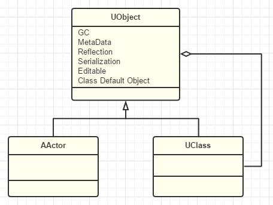

GamePlay架构(1)：Actor和Component
UObject
藉着UObject提供的元数据、反射生成、GC垃圾回收、序列化、编辑器可见、Class Default Object等，UE可以构建一个Object运行的世界。

Actor
UE取一些UObject的泥巴，派生出了Actor。在UE眼中，整个世界从此了有了一个个生动的"演员"，众多的"演员"们，一起齐心协力为观众上演一场精彩的游戏。

脱胎自Object的Actor也多了一些本事：Replication（网络复制）,Spawn（生生死死），Tick(有了心跳)。
为何Actor不像GameObject一样自带Transform？
关键在于，在UE看来，Actor并不只是3D中的"表示"，一些不在世界里展示的"不可见对象"也可以是Actor，如AInfo(派生类AWorldSetting,AGameMode,AGameSession,APlayerState,AGameState等)，AHUD,APlayerCameraManager等，代表了这个世界的某种信息、状态、规则。你可以把这些看作都是一个个默默工作的灵体Actor。
经过了UE的权衡和考虑，把Transform封装进了SceneComponent,当作RootComponent。
Component
在早期，每个Actor拥有的技能都是与生俱有，只能父传子一代代的传下去。随着游戏世界的越来越绚丽，需要的技能变得越来越多和频繁改变，这样一组合，Actor数量们就开始爆炸了，难以管理，UE下定决心让Actor轻装上阵，只提供一些通用的基本生存能力，而把众多的"技能"抽象成了一个个"Component"并提供组装的接口，让Actor随用随组装。
ActorComponent下面最重要的一个Component就非SceneComponent莫属了。SceneComponent提供了两大能力：一是Transform，二是SceneComponent的互相嵌套。


为何ActorComponent不能互相嵌套？而在SceneComponent一级才提供嵌套？
UE 的组件体系是刻意分层设计的，而不是能力递增式"随意嵌套"。
- ActorComponent = 行为组合，不是结构节点
- SceneComponent = 空间节点，必须构成树
Actor的SceneComponent哲学
采用容器 + 组件结构。车是一个 Actor（容器），车身是 RootComponent，轮子是挂载在下的子 Component。为了聚合管理和逻辑封装，体现了从"控制每一个像素"到"控制每一个对象"的工程化思维转变。